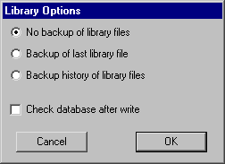
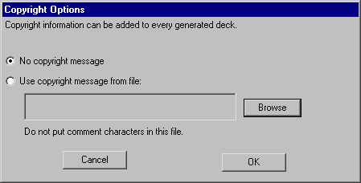

Chapter 3: HIERARCHY
 |
3-9: Libraries |
|
A library is a collection of cells and cells that forms a consistent hierarchy.
To enforce this consistency,
Electric stores an entire library in one disk file that is read or written at one time.
It is possible, however, to have multiple libraries in Electric.
Only one library is the current one, and this sometimes affects commands that work at the library level.
When there are multiple libraries, you can switch between them with the Change Current Library...
command of the File menu.
To see which libraries are read in, use the List Libraries command.
To create a new, empty library, use the New Library... command of the File menu.
To change the name of the current library, use the Rename Library... command.
To delete a library, use the Close Library command.
This removes only the memory representation, not the disk file.
Note that library changes are too vast to be tracked by the database-change mechanism and so are not undoable.
It is possible to link two libraries by placing an instance of a cell from one library into another
(this is done with the New Cell Instance... command of the Edit menu).
When this happens, the library with the instance
(the main library) is linked to the library with the actual cell (this is the reference library).
Because the reference library is needed to complete the main library,
it will be read whenever the main library is read.
If referenced libraries are edited independently,
it is possible that a reference to a cell in another library will not match the actual cell in that library.
When this happens, Electric creates a "placeholder" cell that matches the original specification.
Thus, the link to the referenced library is broken because the cell there does not fit where the instance should be.
To see a list of all placeholder cells that were created because of such problems,
use the General Cell Lists... command of the Cells menu and select "Only placeholder cells".
Reading Libraries
The Open Library... command of the File menu brings a new library into Electric from disk.
These disk files are in a private binary format (that is, not readable outside of Electric).
Besides Electric libraries,
it is possible to read circuit descriptions that are in other formats with the Import command of the File menu.
Most of these commands place the data into a new library that has the same name as the disk file.
When reading these files,
it is important that the current technology be set to the one in the file so that proper layer conversion can be done
(use the Change Current Technology... command of the Technology menu).
These formats can be read:
- Caltech Intermediate Format (CIF) is used to describe integrated circuit layout.
It contains no connectivity, so after the library is read,
it does not know about transistors and contacts: just layers.
Use the CIF Options... subcommand of the IO Options command to affect how CIF is read.
- Stream (GDS II) is also used to describe integrated circuit layout.
It contains no connectivity, so after the library is read,
it does not know about transistors and contacts: just layers.
Use the GDS Options... subcommand of the IO Options command to affect how GDS is read.
On Windows, it is possible to select multiple files for input.
If you do this, all of the GDS will be read into the current library.
- Electronic Design Interchange Format (EDIF) is used to describe both schematics and layout.
Electric reads EDIF version 2 0 0.
- VHDL is a hardware description language that describes the structure of a circuit.
When VHDL is read, it is not converted to layout,
but instead is placed into a text cell with the {vhdl} view.
- Library Exchange Format (LEF) is an interchange format that describes the cells in a library.
The cells that are read in contain ports, but very little contents.
- Design Exchange Format (DEF) is an interchange format that describes the contents of a library.
DEF input often makes use of associated LEF files which must already have been read.
Use the DEF Options... subcommand of the IO Options command to affect how DEF is read.
- AutoCAD DXF is a solid-modeling interchange format,
and so it may contain 3D objects that cannot be read into Electric.
Nevertheless, Electric creates a library of artwork primitives as well as it can
(you must switch to the Artwork technology before importing DXF).
Use the DXF Options... subcommand of the IO Options command to affect how DXF is read.
- Standard Delay Format (SDF) is used to read test vector parameters and place them on cells in the current library.
Before this data can be used by the simulator, one of the three sets
(Typical, Minimum, or Maximum) must be selected with the Annotate Delay Data (ALS)
subcommand of the Simulate command of the Tools menu.
- Schematic User Environment (SUE) is a schematic editor that captures a single cell in each file.
The circuitry in SUE files is added to the current library instead of being placed in its own library
(because many SUE files may have to be read to build up a single Electric library).
- Readable Dump is an Electric-specific format that captures the entire database,
but in an editable text format.
Because it is text, it is slower to read than Electric's binary files,
and takes up more space on disk.
However, it can be transferred between machines more reliably and can be edited if necessary.
See Section 7-3
for more information on external formats.
Writing Libraries
Writing libraries to disk is done with the Save Library command of the File menu.
The Save All Libraries command of the File menu writes all libraries that have changed.
If a library was read from disk, it is written back to the same file.
If, however, you wish to write the library to a new file
(thus preserving the original) then use the Save Library As... command.
|
The Library Options... subcommand of the IO Options command of the File
menu controls the writing of libraries to disk.
By default, saved libraries overwrite the previous libraries and no backup is created.
If you choose "Backup of last library file",
then the former library is renamed so that it has a "~" at the end.
If you choose "Backup history of library files",
then the former library is renamed so that it has its creation date as part of its name.
You can also use this dialog to request that the database be checked when saves are done.
|  |
Electric can also write external format files with the Export command of the File menu.
These formats can be written:
- Caltech Intermediate Format (CIF) is used to describe integrated circuit layout.
The output file contains only the current cell and any circuitry below that in the hierarchy.
Use the CIF Options... subcommand of the IO Options command to affect how CIF is written.
- Stream (GDS II) is also used to describe integrated circuit layout.
The output file contains only the current cell and any circuitry below that in the hierarchy.
Use the GDS Options... subcommand of the IO Options command to affect how GDS is written.
- Electronic Design Interchange Format (EDIF) can write either the Netlist or the Schematic view of the circuit.
Use the EDIF Options... subcommand of the IO Options command to affect how EDIF is written.
Electric writes EDIF version 2 0 0.
- Library Exchange Format (LEF) is an interchange format that describes the exports on cells in a library.
- Circuit Design Language (CDL) is a Cadence interchange format for netlists.
- Eagle is an interface to the Eagle schematics design system (netlist format).
Before writing Eagle files, you must give every node the "ref_des" attribute,
and every port on these nodes the "pin" attribute.
If you also place the "pkg_type" attribute on the node, it overrides the cell name.
Use the Define... subcommand of the Attributes command of the Info menu to create these attributes
(see Section 6-8 for more information).
Also, every network must be named.
- ECAD is an interface to the ECAD schematics design system (netlist format).
- Pads is an interface to the Pads schematics design system (netlist format).
- AutoCAD DXF is a solid-modeling interchange format.
Use the DXF Options... subcommand of the IO Options command to affect how DXF is written.
- L is the GDT language, still appearing in some commercial systems.
The output file contains only the current cell and any circuitry below that in the hierarchy.
- PostScript is the Adobe printing language.
The output file contains only a visual representation of the current cell
(or part of that cell).
PostScript options can be controlled with the Print Options... command of the File menu.
- HPGL is the Hewlett-Packard printing language.
The output file contains only a visual representation of the current cell
(or part of that cell).
HPGL options can be controlled with the Print Options... command of the File menu.
- Readable Dump is an Electric-specific format that captures the entire database,
but in an editable text format.
Because it is text, it takes up more space on disk.
However, it can be transferred between machines more reliably and can be edited if necessary.
The exported files from Electric are often considered to be proprietary information, and must be marked appropriately.
|  |
By using the Copyright Options... subcommand of the IO Options command of the File menu,
a disk file with copyright information can be inserted into exported files.
Since each export file has a different format for comments, the copyright file should not contain any such characters.
Instead, the system will insert the proper comment characters for the particular export format.
|
The copyright file will be inserted into decks exported for CIF, LEF, and CDL, as well as in simulation netlists for
Verilog, SPICE, FastHenry, IRSIM, and ESIM.
See Section 7-3
for more information on external formats.
Standard-Cell Libraries
Electric does not come with any useful libraries for doing design.
However, the system is able to make use of Artisan libraries.
These libraries are free, provided that you sign an Artisan license.
Once you are licensed, you will have standard cell libaries, pad libraries, memory libraries,
and more.
Artisan libraries are not distributed in Electric format.
Instead, they come in a variety of formats that can be read into Electric.
The GDS files contain the necessary geometry, and the LEF files contain the connectivity.
By combining them, Electric creates a standard cell library that can be placed-and-routed
(with the silicon compiler) and can be fabricated.
Note that the data is not node-extracted,
so not all of Electric's capabilities can be used with this data.
To create an Artisan library, follow these steps:
- Select the Artisan data that you want and extract the GDS and LEF files for it.
The GDS files will have the extension ".gds2", which is not what Electric expects
(Electric expects them to end with ".gds"), so you may want to rename them.
- Read the LEF file into Electric with the LEF (Library Exchange Format)
subcommand of the Import command of the File menu.
Keep in mind that the LEF data may come in multiple versions for different numbers of metal layers.
- Read the GDS data into Electric with the GDS II (Stream) subcommand of the Import
command of the File menu.
Note that the proper GDS layers must be established first
(with the GDS II Options... subcommand of the IO Options command of the File menu).
As an aid in this process,
you may find it helpful to read either the file "tsmc25.txt" or "umc18.txt" in the Electric library directory
(these are Readable Dump files that can be read with the Readable Dump subcommand of the Import
command of the File menu).
Note that there will now be two libraries in memory: one with the GDS data and one with the LEF data.
- Merge the port information from the LEF library into the GDS library.
It is important that the GDS library be the "current library"
(use the Change Current Library... command of the File menu if it is not).
To merge the LEF port information, use the Add Export from Library... command of the Export menu.
You will be prompted for a library, and should select the one with the LEF data.
- At this point, the GDS library now has standard cells in it.
Before saving it to disk, you should probably use the Cell Options... command of the Cells
menu and set all of the cells to be "Part of a cell-library".